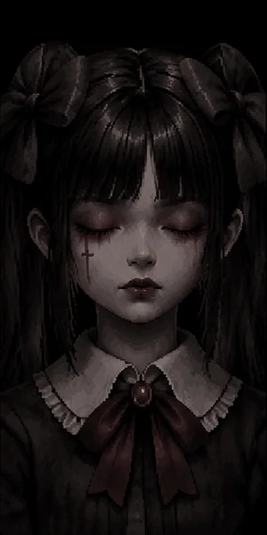
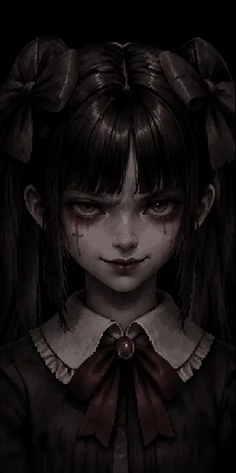
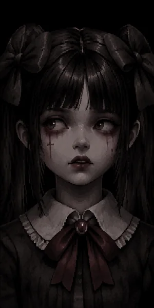

Meeto Games présente — shooter gothique en arène

— shooter gothique en arèneUn shooter gothique à la première personne sur la lutte pour la vie, dans un monde de jouets fait de soldats en plastique et de ballerines en porcelaine.
À propos du jeu
Pogost est un FPS rapide en arènes. Les vagues d’ennemis s’enchaînent, chaque niveau rapporte de l’expérience et une carte d’amélioration, et entre deux parties tu dépenses tes gains en améliorations permanentes.
Le monde est fait de jouets, mais l’histoire qui se cache derrière est sérieuse : elle parle de la lutte pour la vie. Le petit Mito et la jeune gothique Mina mènent chacun leur propre combat, et les arènes sont le lieu où il se joue.
Le jeu est en développement sous Unity. Les captures montrent une version précoce.
Vagues et cartes d’amélioration
Survis aux vagues d’ennemis, monte de niveau et choisis une carte d’amélioration à chaque niveau.
Mouvements rapides
Triple saut, une ruée qui te rend intouchable et une frappe au sol avec onde de choc.
Des armes qui ont du poids
Recul, culasse mobile et douilles physiques avec leur propre son.
Des jouets qui se brisent
Les soldats en plastique perdent casques et bras, et les morceaux restent dans l’arène.
Bande-son originale
Les lumières et l’interface battent au rythme de la musique.
Progression entre les parties
Dépense tes gains en améliorations permanentes et reviens plus fort.
Mina






Mina, l’un des deux personnages principaux.
Captures d’écran
Le jeu est en développement
Les captures et les détails peuvent changer d’ici la sortie. En attendant, mes jeux sur navigateur sont déjà jouables.
Jeux sur navigateur